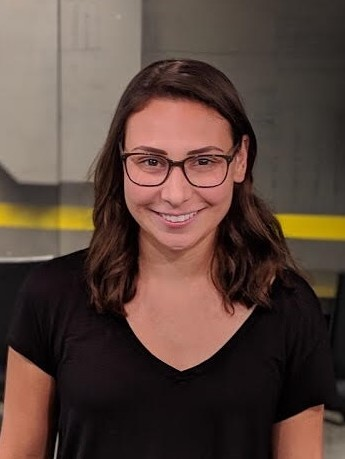

EXPLORE TECH
Registration for our Fall 2019 program is now open!
For 7th to 9th grade girls
This program gives our participants the opportunity to investigate specific topics in depth. Participants can choose one or both topics, to meet six or twelve times per semester on School of Mines campus.

- Time: 5:00-6:15
- Day: Offered Monday - Thursday (choose ONE day of the week, depending on the topic, as listed below)
- Location: Colorado School of Mines campus
- Cost: $80 per program, or, $150 for both Computer Science and Environmental Engineering
2019 Fall Session
Girls can join us for exploration in EITHER Computer Science or Environmental Engineering, or BOTH!
Computer Science
Course Title: Mobile App Development
Course Description: Mobile applications are used everyday for games, media, information, social interaction, and learning. Do you have a great idea for an app but no idea where to get started? This 6-week course will walk participants through the fundamentals of Computer Science, as well as mobile application coding. Students will explore the app development process: ideation, planning, design, app creation, testing, and launch. No experience or devices required!
-
Computer Science session days/dates (choose ONE session):
- MONDAY session: September 16, September 23, October 7, October 21, November 4, November 11
- WEDNESDAY session: September 18, September 25, October 9, October 23, November 6, November 13
Course Instructor:
Madeline is a Senior Computer Science major from Seattle, Washington. She is passionate about both her research in Machine Learning and making STEM more accessible to girls. In her free time, she enjoys hiking South Table and cooking with her roommates.
Environmental Engineering
Course Title: Importance and Innovation
Course Description: Environmental Engineering is a rapidly expanding field in the age of technology and innovation. Environmental Engineering applies to nearly every aspect of engineering as all human processes can produce detrimental effects on the Earth. Therefore, innovation in this field is essential in helping to ensure that people, plants, animals, and all living organisms remain safe and healthy. We will explore this multidisciplinary field of engineering and participants will complete a multi-week project that could include such things as water treatment processes; microbiology; site remediation, air, water, and soil quality monitoring; and much more! Participants will come away with a better understanding of how environmental engineering is important for the planet as well as how they can make a difference.
-
Environmental Engineering session Days/Dates (choose ONE session):
- TUESDAY session: September 17, September 24, October 8, October 22, November 5, November 12
- THURSDAY session: September 19, September 26, October 10, October 24, November 7, November 14
Have questions? Please visit our FAQ page and find answers to popular questions.
Need more information? Please email us at stem-tech@mines.edu.
Financial scholarships available thanks to our sponsors